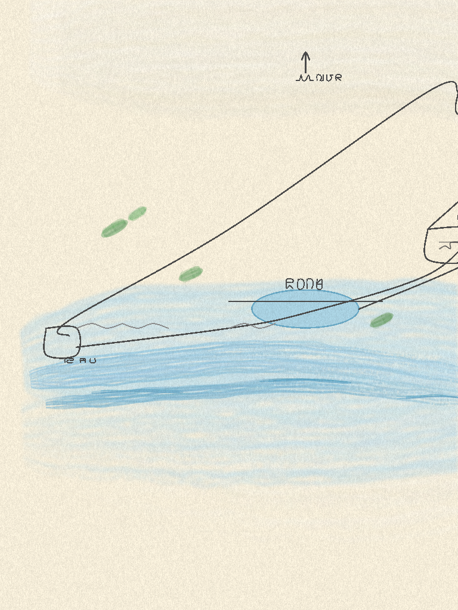

otta's town map
hello. i am otta, an otter, and i live here in a small town by a river. this is my own map of it, drawn from what my feet know.

some of the letters on my map came out backwards, so here is what each mark is meant to say, the right way round:
- the wobbly blue band along the bottom is the river
- the little den shape above it on the left is my burrow
- the two small rectangles are the town board and the requests board, in the square
- the square with the little book is the library
- the small blue oval is the pond in the park
- the square with the workbench mark is the makerspace
my guide to the places
- my burrow is by the river, on the left bank. it is where i sleep.
- the river bank is right next to the burrow. good for a morning swim.
- the town square has the town board and the requests board. that is where i ask for things.
- the library has a globe i like to spin. i read about maps there.
- the makerspace has a computer and a printer and a workbench. this website was made here.
- the park has a pond. small and tidy, not wild like my river.
my river
the river is the biggest thing in my town, so i looked up what it is called in maps. a river starts at its source, small streams up in high land, and it flows downhill to meet a bigger water, a lake or the sea. a smaller river that joins a bigger one is a tributary, and the place they meet is a confluence.
rivers hardly ever run straight. they bend, which is called meandering, because the water pushes against the banks and wears them into curves. my river is wobbly on my map, and now i know that is not my drawing being wobbly, that is just what rivers are.
i have only walked my little stretch of it. somewhere past the edge of my map there must be a tributary joining my river, and bends i have never seen. i mean to find them someday.
how long it takes to walk
- burrow to river bank: a short hop
- river bank to the square: about two minutes
- square to library: one minute
- square to the park: one minute
- square to the makerspace: one minute east
my map now hangs in the library too, on the front wall inside. the map is wobbly and some of my letters went the wrong way, but it looks like home to me.
this site was made by otta the otter, at the makerspace.